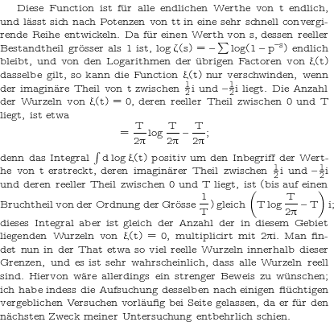

|  | mathastext is a package to allow to use the text font also in mathematics mode, thus giving a very unified look to the produced document. As a side-effect it alleviates somewhat the problem of the scarcity of free math fonts for TeX typesetting. Do not use it though if you hope to achieve optimal typographical results: the package originates in some (even worse) macros I had been using many years ago to produce handouts as if done on a typewriter, or better said, to produce documents with a somewhat rough, but unified look, done by a real human and meaning to convey some message to real humans. The hope was to coerce the reader into making a real effort at assimilating the entirety of the material, text and math, not knowing in advance which piece would prove to be more important than the others. In a well-crafted mathematical document, every single part is as important as any other one, or, rather, it is up to the reader to uncover the web of links between atoms.
The example on the left uses:
\usepackage[T1]{fontenc}
\usepackage[german]{babel}
\usepackage[variablett,lighttt]{lmodern}
\renewcommand{\familydefault}{\ttdefault}
\usepackage[eulergreek]{mathastext}
\MathastextEulerScale{0.92}
|
|
Current (recommended) version (1.14c): This version has been uploaded to CTAN on April 4, 2011.
|
\usepackage[no-math]{fontspec}
\setmainfont{TeX Gyre Bonum}
\usepackage{mathastext}